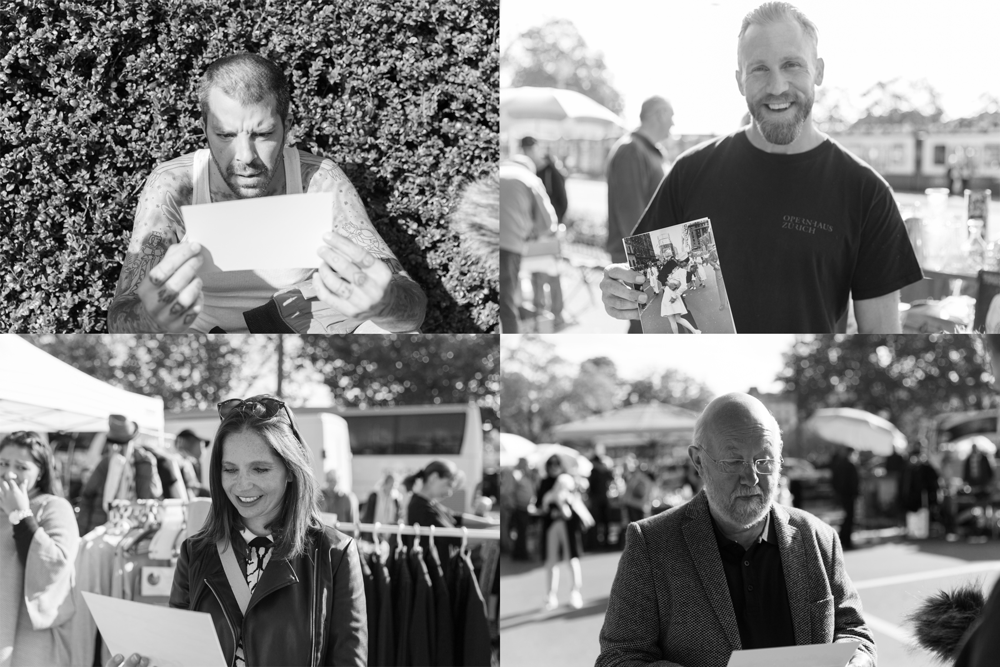

Neuer Tag, neues Glück.
Samstag, 23.09.2017, Auf ein Neues!
Lars, Stephanie und ich machten uns auf den Weg zum Flohmarkt am Bürkliplatz, bewappnet mit einem Dutzend Bilder, einer Kamera und einem Mikrofon. Wir hatten Glück, denn es war ein sonniger, schöner Tag.
Die Stimmung am Flohmarkt war sehr gut.
Nachdem wir uns einen ersten Eindruck vom Flohmarkt geschaffen haben, befragten wir den ersten Passanten. Das Ergebnis des ersten Versuchs war genau wie gewünscht. Dies hat uns so motiviert, dass wir gleich noch 10 weitere Kandidaten
und Kandidatinnen befragt und fotografiert haben.
Gegen Ende des Morgens hatten wir unser Material für die Auswertung zusammen. Glücklich über unseren Erfolg machten wir uns auf den Weg zurück zum Schulhaus, wo wir unsere nächsten Schritte besprachen.
Einige unserer Imperssionen des Tages:
